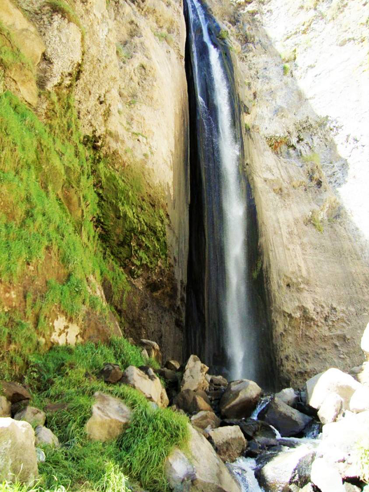
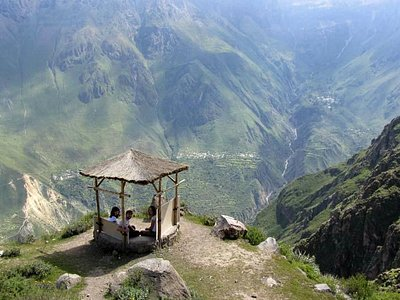
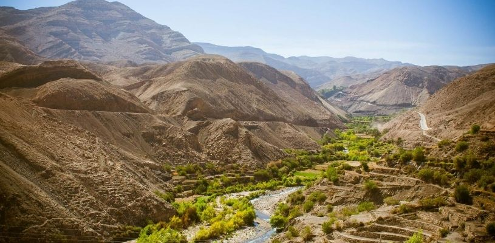

Iglesia San Andrés
📍 Yura Viejo
Iglesia colonial construida con sillar rosado y ubicada en la plaza principal.

Catarata de Capúa
📍 Capúa
Caída de agua rodeada de farallones y paisajes naturales.

Hornos de Cal
📍 La Calera
Antiguos hornos utilizados tradicionalmente para la producción de cal.

Mirador de Coipata
📍 Coipata
Mirador natural desde donde se puede apreciar el paisaje de Yura.

Andenería
📍 Yura Viejo
Antiguas terrazas agrícolas utilizadas para el cultivo en las laderas.